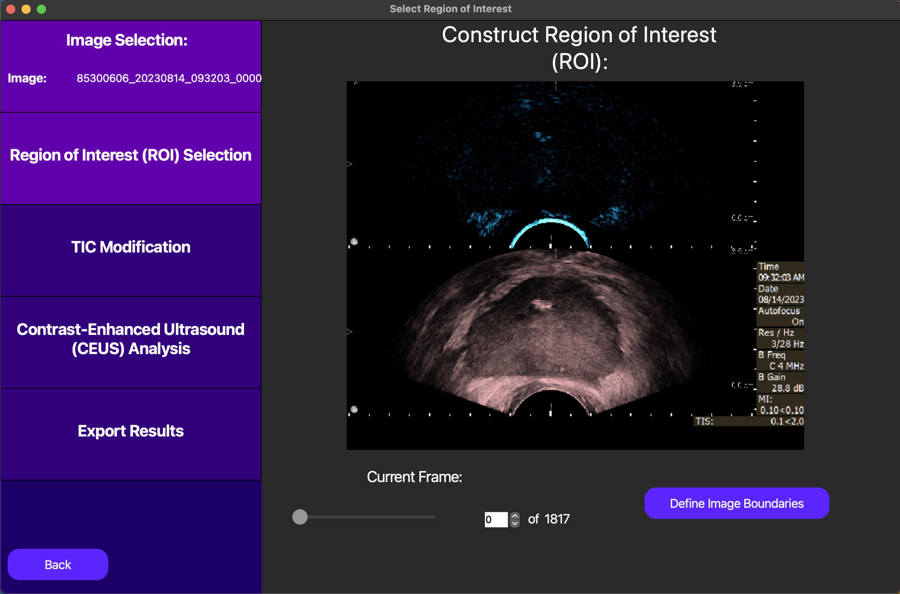

2D DCE-US GUI Example
Overview
This tutorial is a sample walkthrough of time intensity curve (TIC) analysis of a bolus injection captured in a 2D dynamic contrast enhanced ultrasound (DCE-US) cine loop. This example uses the optional motion compensation feature on data stored in NIfTI format. For reference, the sample data used in this example can be found here.
Image Selection
After opening the QuantUS GUI, we can begin by selecting 2D Dynamic Contrast-Enhanced Ultrasound (DCE-US) with Motion Correction from the main menu. From here, we can select the NIFTI button to choose the appropriate parser for this set of analysis. Once we input the B-Mode and DCE-US cine loops, we click Generate Image to parse the data.
After the ultrasound parser loads, the cine loops will be displayed in the main window, as shown below.
{kind=link}
In this case, the division between the B-Mode and DCE-US videos are not pre-defined, so we must manually delineate them. This step is important for the accuracy of our segmentations later in this example, as it enables us to translate coordinates between the B-Mode and DCE-US images.
Region of Interest Selection
Following the analysis progression on the left side of the GUI, we now move to Region of Interest (ROI) selection. The ROI determines which segmentation of the inputted image we will use to compute the TIC in our analysis.
On the GUI, the New ROI button enables us to draw a free-handed spline to define the ROI. As detailed in the image below, this free-handed ROI will be drawn on a single frame in the cine loop. From here, the user can choose a constant ROI where each frame has the same ROI, or the user can fit to ROI using motion correction, so that in each frame, the ROI covers the area that most closely matches the ROI in the frame drawn. Note that in all of these cases, the ROI should be drawn on the B-Mode image. The ROI will later be translated onto the DCE-US image when the TIC is computed.
{kind=link}
After we enable motion correction by pressing the fit to ROI button, the results of the motion correction are displayed as follows. Note that the green rectangle within the white rectangle denotes the accepted ROI for the current frame, and the purple rectangle corresponds to that ROI translated on the DCE-US image. In frames where there is no match with the frame where the ROI was drawn, a red box will appear and this frame will be excluded from the analysis.
{kind=link}
Once we are satisfied with our ROI, we can click the Save ROI button to save the ROI for later use. Also, we can click the Accept Generated ROI button to move to the next step of the analysis.
TIC Modification
On this screen, we start with the option of manually selecting a t0 for the TIC analysis, or automatically selecting one later. In this context, t0 corresponds to the start point we use when we fit a lognormal curve to the TIC data to quantitatively model the bolus injection. In this case, we opt to automatically select t0 later, as this will be optimized for us.
{kind=link}
From here, we can select points in the TIC to exclude from the analysis by dragging a rectangle over them and pressing the Remove Selected Points button. This is useful for removing outliers or other points that may skew the analysis.
Also, notice how there appears to have been significant motion between roughly the 18th and 21st seconds, as our motion correction output skipped these frames. This can be investigated more by clicking on individual points on the TIC plot, which will cause the cine loop above the TIC plot to move to the frame corresponding to that point.
Finally, we can click the Accept TIC button to fit a lognormal curve to our modified TIC and view our results.
Analysis Results
After performing the lognormal curve fitting, the area under the curve (AUC), peak enhancement (PE), time to peak (TP), mean transit-time (MTT), t0, and ROI area are displayed by pressing the Show TIC button in the new screen. A visual of our curve fit is also displayed, as shown below.
{kind=link}
Also, note an optional parametric map can be computed and displayed using the Generate Paramap and Load Parametric Map buttons. This feature is currently only available for constant (not motion corrected) ROIs. It works by segmenting the constant ROI into smaller ROIs and running TIC analysis on each of these smaller ROIs. Note the TIC for each of these small ROIs must be unmodified, so this feature is best used for non-noisy data. This feature is useful for visualizing the spatial relationships between the TIC parameters, but is highly computationally intensive and should be used with caution.
Finally, we can save the TIC parameters for the entire ROI into a CSV file by first pressing the Save Data button and then pressing the Export Data button. This will enable a direct link to a CSV file which can store data from multiple analyses. A CLI is also currently under development to streamline this pipeline using batch processing.